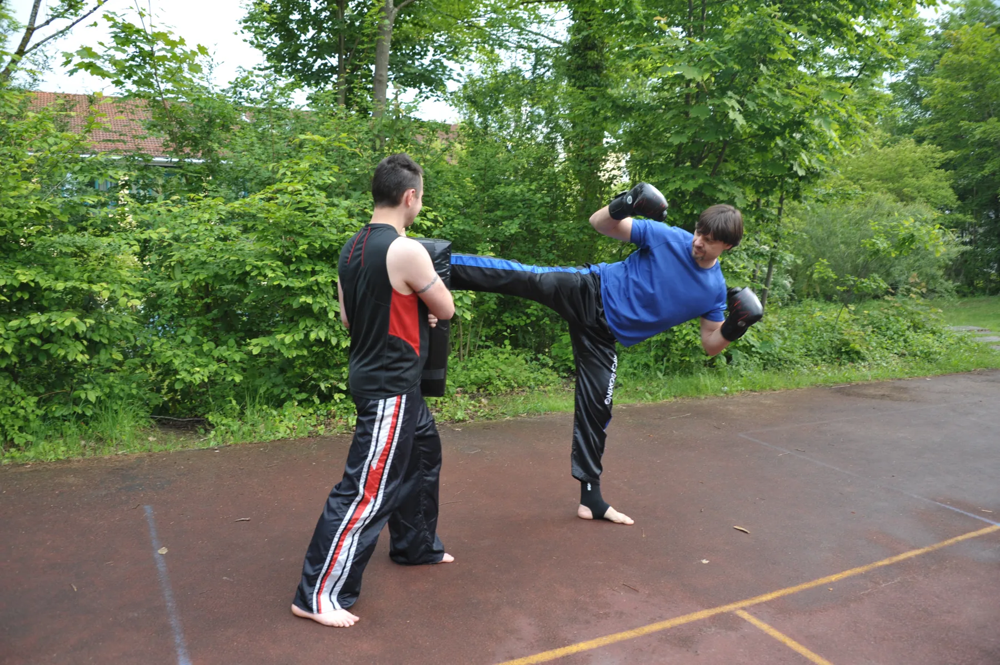
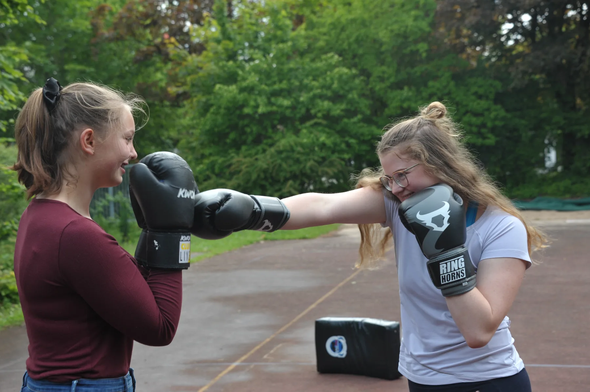

Kickboxen

Technik und Fitness
Offen und nicht wettkampforientiert
Über die Jahre hat sich unsere Gruppe Kickboxen und deren Ausrichtung stetig verändert und weiterentwickelt, so wie auch das Kickboxen im Laufe der Jahrzehnte vom Nischen- zum Trendsport geworden ist. Unser heutiges Trainingskonzept ist dem Zeitgeist angepasst und bietet maximale Offenheit für alle Kickboxen-Interessierten.

Training
Schlag, Tritt, Bewegung
Unser Fokus liegt neben dem Erlernen der verschiedenen Schlag-, Tritt- und Bewegungstechniken auch stark auf dem Auf- und Ausbau von Ausdauerfähigkeit, Koordination und Fitness.
Durch viele Partnerübungen sowie das Sparring im Leichtkontakt wird praxisbezogen geübt, wobei die angemessene Schutzausrüstung unverzichtbar ist.

Keine Wettkampfpflicht
Zwischen Sportstudio und Wettkampftraining
An Wettkämpfen nehmen wir bewusst nicht teil. Mit unserem Trainingsangebot decken wir eine große Bandbreite ab, die zwischen leistungs- bzw. wettkampforientiertem Training und den Kursen vieler Sportstudios liegt.
Unser Ziel ist es, den vielseitigen Sport Kickboxen über viele Jahre mit Spaß auszuüben und uns dabei langfristig weiterzuentwickeln.
Zielgruppe
Erwachsene und Jugendliche ab 16
Damit sind wir offen für eine breite Zielgruppe, auch wenn noch keine Vorkenntnisse im Kampfsport vorhanden sind oder erst im Erwachsenenalter mit dem Training begonnen wird.
Unsere Gruppe umfasst je Training zwischen 10 und 20 Personen bei einem ausgeglichenen Frauen-/Männeranteil und einer Altersspanne zwischen 18 und über 50 Jahren sowie Jugendlichen ab 16 Jahren. Interessierte sind bei uns jederzeit herzlich willkommen, um sich selbst ein Bild zu machen und das Kickboxen für sich zu entdecken.